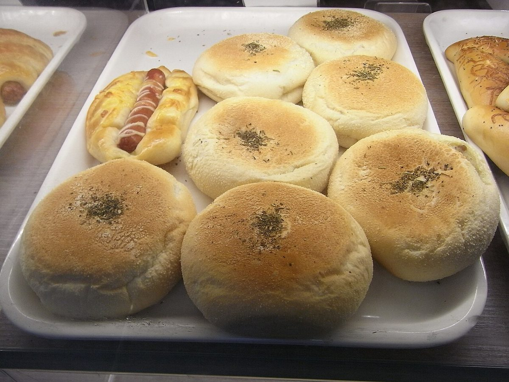

以下は制作側が作成したイメージ例であり、実際のお客様の声ではありません。
口コミ
お店に寄せられそうな声のイメージを、見本として並べています。
イメージ例
お米のパンは、もっちりした食べごたえがうれしいです。毎日の朝ごはんにしたくなりました。
イメージ例
米粉のお菓子を、おやつと手土産に選びました。やさしい味わいで、渡した相手にも喜んでもらえました。
イメージ例
小さなお店なので、ゆっくり選べました。落ち着いた雰囲気で、また立ち寄りたいと思います。

お店の最新情報は、Instagramでご覧いただけます。
Instagram(@aimoikoma)を見る